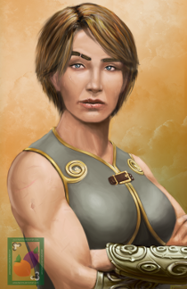
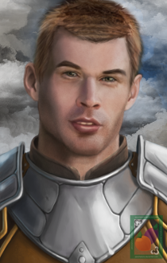
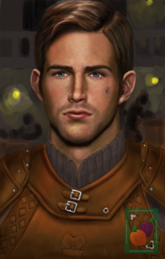
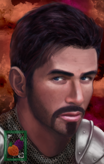
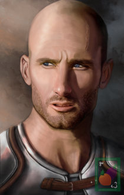
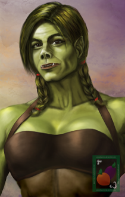

Aran Whitehand: Story Characters
| Secondary Characters found in the Aran Whitehand NPC mod: | ||
|---|---|---|
| (portraits by Peachplums; at DeviantArt): | ||
Orrin the Tavern Keeper |
 Teldra the Recruiter |
 Erika the Barmaid |
|  Toran the Drunk |
 Manson the Bouncer |
 Stedd the Romance Wraith |
|  Gerald the Strong |
 Cheris the Young |
Kavain the Experienced |
Oskut the Mercenary |
Malcer the Romantic Foil |
 Taman the Mercenary |